Auto scaling คือ บริการของ Amazon ในกรณีที่เครื่อง server ของเรามีคนใช้มากเกินกว่าปกติ server จะทำการเพิ่มขนาดเองโดยอัตโนนมัติ และ ในกรณีที่ server ของเราเสียหายก็สามารถสร้างใหม่ให้ด้วยเราจะมาลองในกรณีที่ 2 กัน ขั้นแรกไปที่ EC2 เลื่อนลงมาจะเจอ Auto Scaling คลิ๊กที่ Launch Configuration จากนั้นกด create configuration
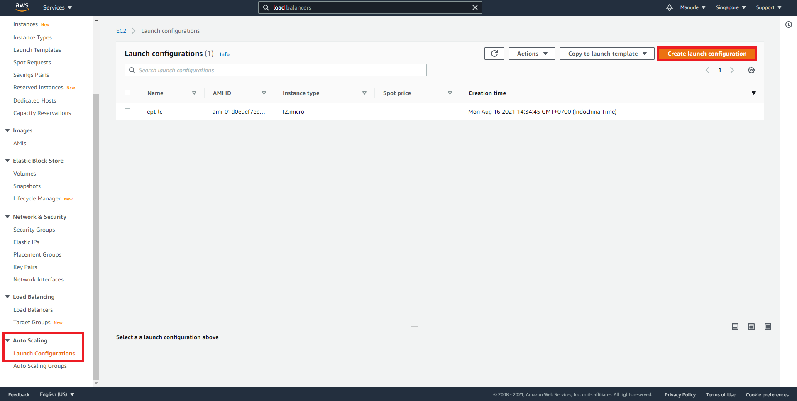ต่อมาให้ตั้งชื่อ Auto scaling ตามด้วยเลือก AMI Image ที่ต้องการ
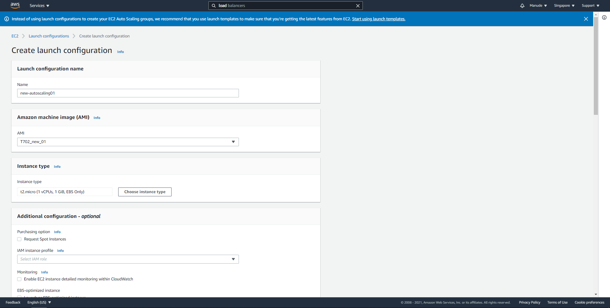ต่อไปให้เลือก Security group ให้ตรงกับเครื่อง ที่เราเลือก Image ไว้
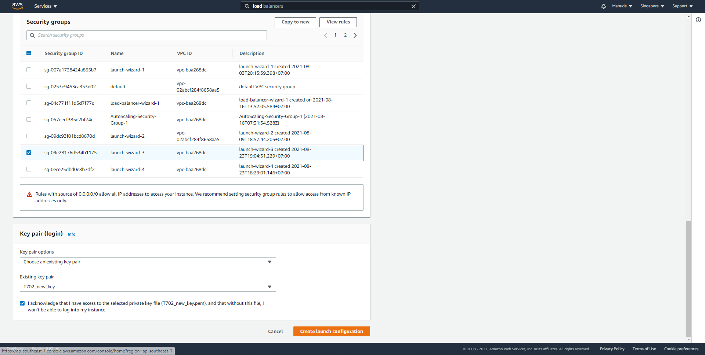จากนั้นเลือก key pair จะเอาอันเดิมหรือจะสร้างใหม่ก็ได้เสร็จแล้วให้กด create launch configuration เมื่อเสร็จแล้วให้เราเลือก launch configuration ที่เรา create มาจากนั้นไปที่ Action->create scaling group ต่อมาให้ตั้งชื่อที่ต้องการ เสร็จแล้วกด next
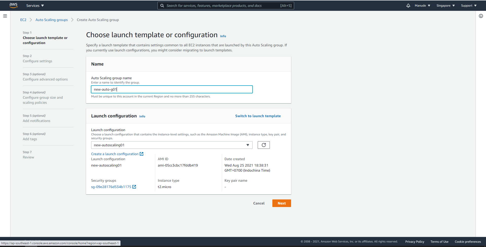ต่อมาให้เลือก VPC และ sub-net เสร็จแล้วกด next
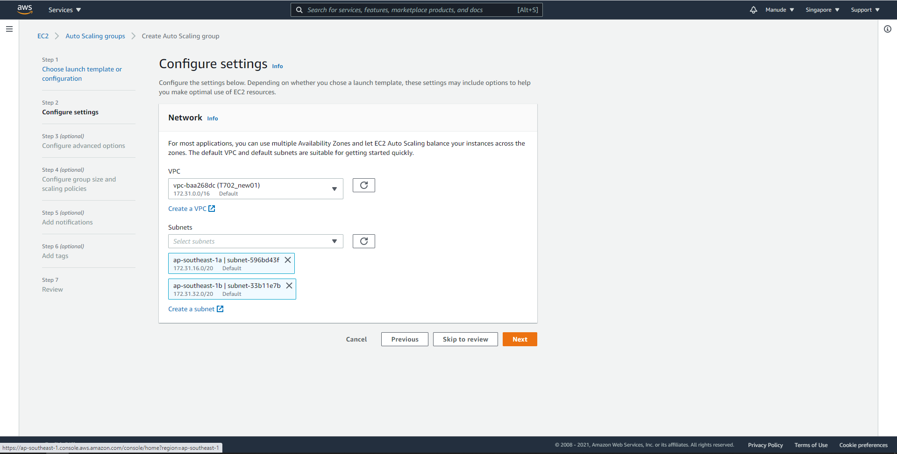ต่อมาให้เลือก load balancer ที่มีอยู่เสร็จแล้วกด next
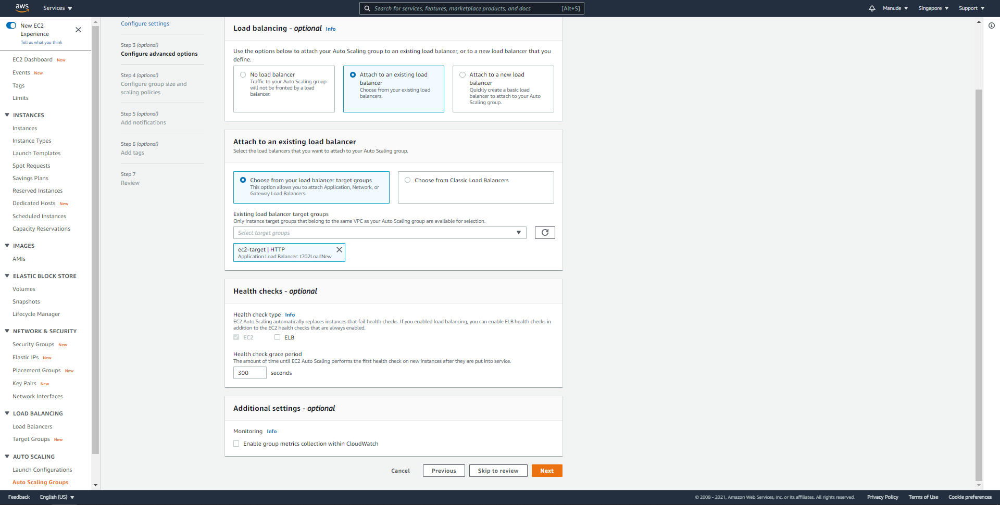เลือก min capacity เป็น 1 max capacity เป็น 10 scaling policies เลือกเป็น none เสร็จแล้วให้กด next จนกว่าจะสร้างสำเร็จ
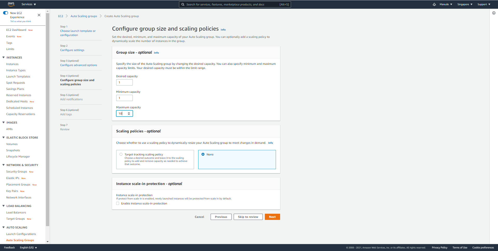เสร็จแล้วกลับไปที่ EC2 จะเห็นว่ามี Instance สร้างมาใหม่ 1 เครื่อง
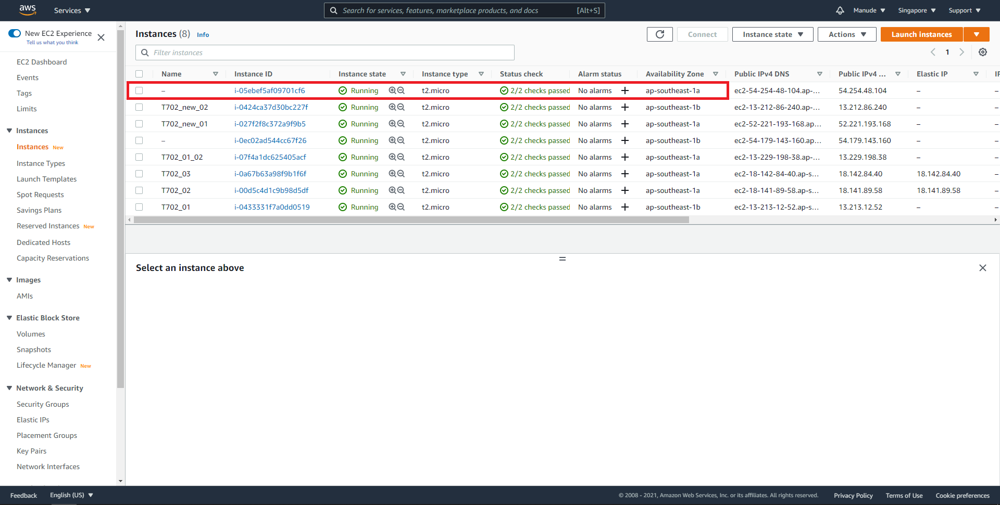ต่อมาได้ทดลองเข้าผ่าน load balancer สร้างไว้ได้ผลลัพธิ์ตามภาพด้านล่างหลังจากนั้นจะทดลองลบ Instance ดังกล่าวทดสอบดูว่าจะมีการสร้าง instance ใหม่ให้หรือไม่
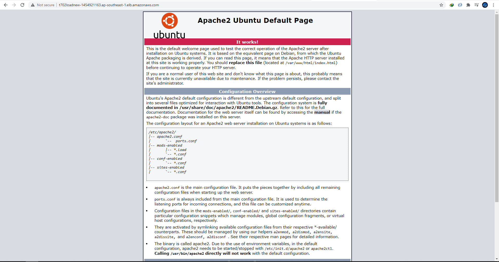เมื่อกดลบแล้วลองเข้าทาง load balancer จะเห็นว่าเครื่องได้ถูกลบไปแล้ว
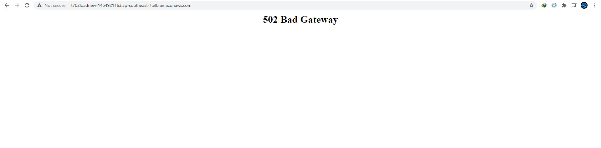หลังจากนั้นไม่นานจะเห็นว่ามี Instance ใหม่ถูกสร้างขึ้นมาแทนที่
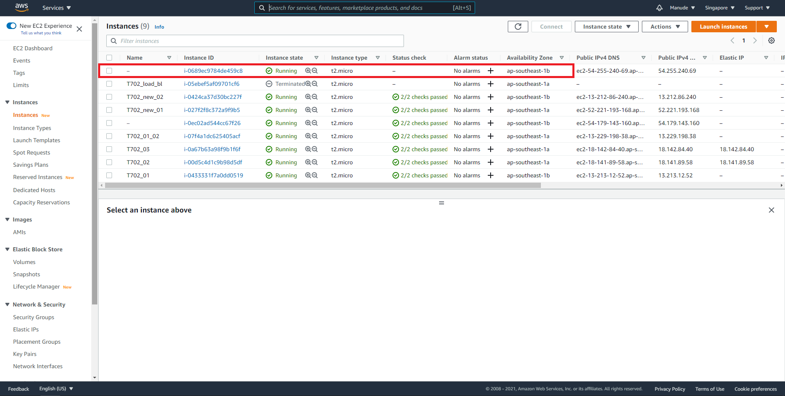รอจนเสร็จแล้วทำการเข้าไปที่ IPv4 ของ load balancer เดิมจะได้ผลลัพธ์ดังนี้ ซึ่งจะเห็นได้ว่า Instance ที่ถูกสร้างใหม่ได้ทำการเชื่อมต่อกับ Load balance เดิมเรียบร้อย